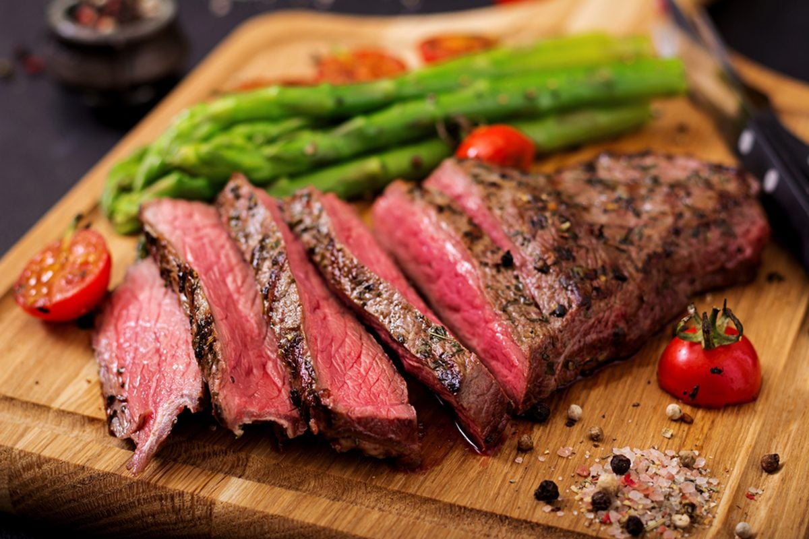

How to cook the perfect steak

- Rub the steak all over with a good lug of olive oil and a good pinch of sea salt and black pepper
- Add the steak to a hot pan, then cook for 6 minutes for medium-rare, or to your liking, turning every minute
- For more flavour, try one or a combination of the following…
- Halve a garlic clove and rub it over the steak every time you turn it
- Rub the steak with a knob of butter – the sweetness from the butter will make it taste divine!
- Or create a herb brush by tying woody herbs like thyme or rosemary to the handle of a wooden spoon and brush it over the steak every minute or so
- Once cooked to your liking, rest the steak on a plate that can collect all the lovely juices for 2 minutes
- Carve with a nice sharp carving knife, then serve with the resting juices drizzled on top